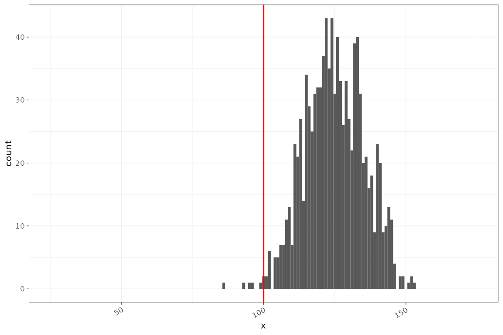
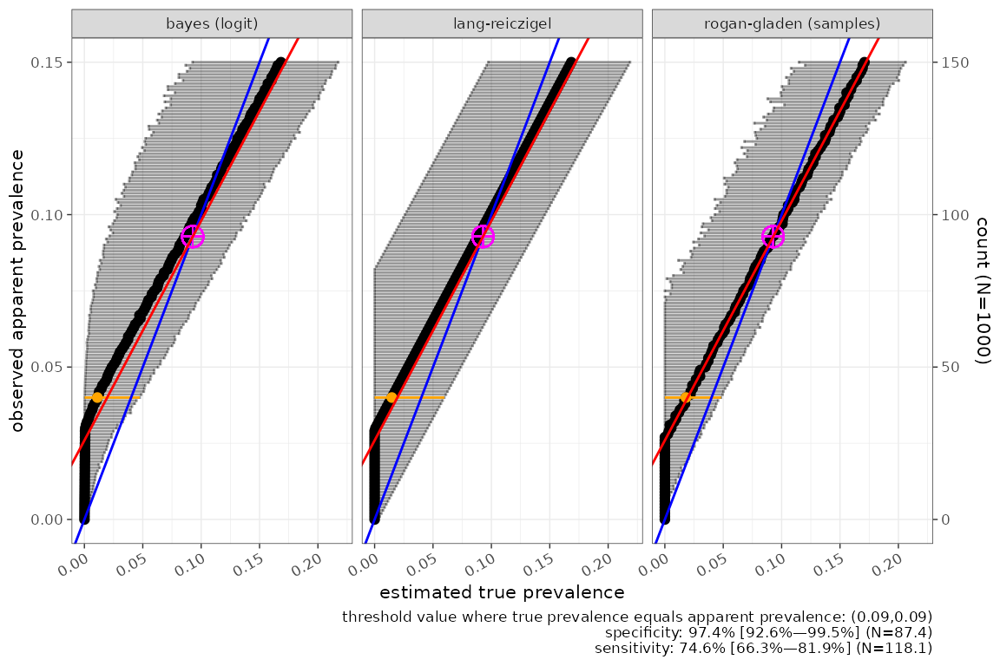
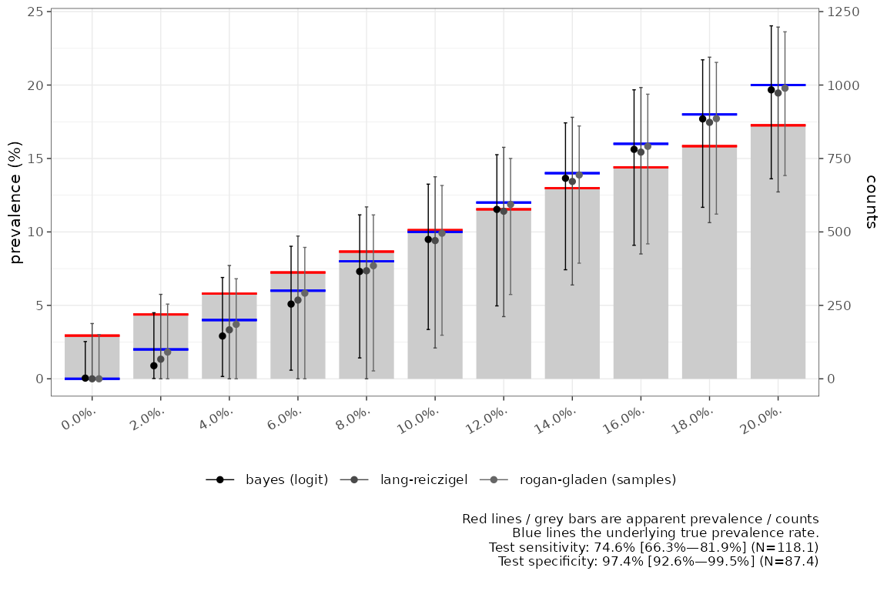

library(tidyverse)
#> ── Attaching core tidyverse packages ──────────────────────── tidyverse 2.0.0 ──
#> ✔ dplyr 1.1.2 ✔ readr 2.1.4
#> ✔ forcats 1.0.0 ✔ stringr 1.5.0
#> ✔ ggplot2 3.5.0 ✔ tibble 3.2.1
#> ✔ lubridate 1.9.3 ✔ tidyr 1.3.0
#> ✔ purrr 1.0.1
#> ── Conflicts ────────────────────────────────────────── tidyverse_conflicts() ──
#> ✖ dplyr::filter() masks stats::filter()
#> ✖ dplyr::lag() masks stats::lag()
#> ℹ Use the conflicted package (<http://conflicted.r-lib.org/>) to force all conflicts to become errors
library(testerror)
options(mc.cores = 2) # parallel::detectCores())
options(testerror.debug=FALSE)
rstan::rstan_options(auto_write = FALSE)
here::i_am("vignettes/testerror.Rmd")
#> here() starts at /home/vp22681/Dropbox/Git/testerror
source(here::here("vignettes/formatting.R"))Supposing we have a disease with a true prevalence in a population of 10%. We test for its presence using a test with sensitivity 0.8 and specificity 0.95. How many positive test results do we expect to see in a sample of 1000 patients?
ap = apparent_prevalence(p = 0.1, sens = 0.8, spec = 0.95)
tmp = tibble::tibble(x = stats::rbinom(1000, 1000, ap))
ggplot(tmp, ggplot2::aes(x=x)) + ggplot2::geom_histogram(binwidth = 1) +
ggplot2::geom_vline(xintercept=100, colour="red")+
ggplot2::coord_cartesian(xlim = c(25,175))
given this setup the test positivity rate will usually be an overestimate of true prevalence. If instead the specificity is 0.995 the picture is completely different, and the expected number of positives will usually be an underestimate:
ap = apparent_prevalence(p = 0.1, sens = 0.8, spec = 0.995)
tmp = tibble::tibble(x = stats::rbinom(1000, 1000, ap))
ggplot(tmp, ggplot2::aes(x=x)) + ggplot2::geom_histogram(binwidth = 1) +
ggplot2::geom_vline(xintercept=100, colour="red")+
ggplot2::coord_cartesian(xlim = c(25,175))A related question is if sensitivity of the test is 0.8 what specificity is required at 10% prevalence for apparent prevalence to be an unbiased estimate? I.e. how specific does a test need to be?
optimal_performance(p=0.1, sens=0.8)
#> $p
#> [1] 0.1
#>
#> $sens
#> [1] 0.8
#>
#> $spec
#> [1] 0.9777821Any specificity lower than this will result in apparent prevalence being an overestimate due to false positives outweighing false negatives, and any specificity higher than this will result in apparent prevalence being an underestimate, due to false negatives outweighing false positives.
Rogan-gladen adjustment
We can use the rogan-gladen adjustment to estimate the true prevalence if we know sensitivity and specificity.
rogan_gladen(0.125, 0.8, 0.95)
#> [1] 0.1However this suffers from a truncation issue if the apparent
prevalence is outside of the range of (1-spec) to
sens:
rogan_gladen(0.05, 0.8, 0.95)
#> [1] 0
rogan_gladen(0.8, 0.8, 0.95)
#> [1] 1It also requires an exact measure of sensitivity and specificity. In reality this is very hard to obtain. In the associated paper we discuss 3 methods for accounting for uncertainty in sensitivity and specificity in estimating true prevalence from apparent prevalence. These are the lang-reiczigel method, a resampling procedure combined with rogan gladen estimates and a full bayesian model. To illustrate these we look a the example of BinaxNOW testing.
BinaxNOW Example
In this case we have uncertain estimates of sensitivity and specificity from the literature, supplied as median values with 95% confidence intervals. We assume this has an underlying Beta distribution to estimate uncertainty.
# Fit beta distributions to sinclair 2013 data:
sens = beta_params(median = 0.740, lower = 0.666, upper = 0.823)
spec = beta_params(median = 0.972, lower= 0.927, upper = 0.998)
sens
#> 74.6% [66.3%—81.9%] (N=118.1)
spec
#> 97.4% [92.6%—99.5%] (N=87.4)For demonstration purposes we look at the true prevalence for every value of apparent prevalence between 0 and 150 positives in an set of 1000 tests, using the 3 methods:
tmp1 = tibble::tibble(
observed = 0:150,
n = 1000
) %>% dplyr::mutate(testerror::true_prevalence(
pos_obs = observed,
n_obs = n,
sens = sens,
spec = spec,
method = "bayes",
model_type = "logit"
))
tmp2 = tibble::tibble(
observed = 0:150,
n = 1000
) %>% dplyr::mutate(testerror::true_prevalence(
pos_obs = observed,
n_obs = n,
sens = sens,
spec = spec,
method = "lang"
))
tmp3 = tibble::tibble(
observed = 0:150,
n = 1000
) %>% dplyr::mutate(testerror::true_prevalence(
pos_obs = observed,
n_obs = n,
sens = sens,
spec = spec,
method = "rogan"
))
tmp = dplyr::bind_rows(tmp1,tmp2,tmp3)Comparing the 3 methods for a wide range of apparent prevalence qualitatively shows the different behaviour of the methods. The Bayesian model seems more appropriate when prevalence is low as it does not suffer from the same truncation issue as the other methods. It is however much slower.
thresh = testerror::underestimation_threshold(sens$q(0.5),spec$q(0.5))
N = unique(tmp$n)
ggplot(tmp, ggplot2::aes(y=observed/n, x=prevalence.median, xmin=prevalence.lower, xmax=prevalence.upper)) +
ggplot2::geom_point()+
ggplot2::geom_errorbarh(alpha=0.4)+
ggplot2::geom_point(data=tmp %>% dplyr::filter(observed==40), colour="orange")+
ggplot2::geom_errorbarh(data=tmp %>% dplyr::filter(observed==40), colour="orange", height=0)+
ggplot2::geom_abline(colour="blue")+
ggplot2::geom_point(x=thresh,y=thresh,colour="magenta", size=4, shape=10)+
ggplot2::geom_abline(intercept = 1-spec$q(0.5), slope = sens$q(0.5)-(1-spec$q(0.5)), colour="red")+
ggplot2::scale_y_continuous(name="observed apparent prevalence",sec.axis = ggplot2::sec_axis(trans = ~ .x*N,name = sprintf("count (N=%d)",N)))+
ggplot2::labs(caption= sprintf("threshold value where true prevalence equals apparent prevalence: (%1.2f,%1.2f)\nspecificity: %s\nsensitivity: %s",thresh,thresh,format(spec),format(sens)))+
ggplot2::xlab("estimated true prevalence")+
ggplot2::facet_wrap(~prevalence.method)
#> Warning: The `trans` argument of `sec_axis()` is deprecated as of ggplot2 3.5.0.
#> ℹ Please use the `transform` argument instead.
#> This warning is displayed once every 8 hours.
#> Call `lifecycle::last_lifecycle_warnings()` to see where this warning was
#> generated.
In the figure above the rogan-gladen adjustment for the median sensitivity and specificity is the red line (base), the blue line shows the case assuming the test is 100% sensitive and specific. and the magenta cross the point at which true prevalence is equal to apparent prevalence.
Test uncertainty
In the example above we have no gold standard to compare output to. For testing we can generate a simulation using the sensitivity and specificity and using a range of simulated true prevalence. Applying correction to simulated apparent prevalence allows us to compare to a simulated gold standard. In this example the distribution of sensitivity and specificity used to estimate the true prevalence is the same as that used to simulate the “observed” data.
ex1 = testerror:::test_example(
spec = spec$shape1/spec$conc,
sens = sens$shape1/sens$conc,
n_samples = 5000,
n_controls = floor(spec$conc),
n_diseased = floor(sens$conc),
exact=TRUE
)
res1 = ex1$summary %>% dplyr::mutate(true_prevalence(
pos_obs = observed_pos,
n_obs = n_samples,
false_pos_controls = ex1$performance$false_pos_controls,
n_controls = ex1$performance$n_controls,
false_neg_diseased = ex1$performanc$false_neg_diseased,
n_diseased = ex1$performance$n_diseased,
method = "bayes",
model_type = "logit"
))
#> Warning: There were 3 warnings in `dplyr::mutate()`.
#> The first warning was:
#> ℹ In argument: `true_prevalence(...)`.
#> Caused by warning:
#> ! There were 22 divergent transitions after warmup. See
#> https://mc-stan.org/misc/warnings.html#divergent-transitions-after-warmup
#> to find out why this is a problem and how to eliminate them.
#> ℹ Run `dplyr::last_dplyr_warnings()` to see the 2 remaining warnings.
res2 = ex1$summary %>% dplyr::mutate(true_prevalence(
pos_obs = observed_pos,
n_obs = n_samples,
false_pos_controls = ex1$performance$false_pos_controls,
n_controls = ex1$performance$n_controls,
false_neg_diseased = ex1$performanc$false_neg_diseased,
n_diseased = ex1$performance$n_diseased,
method = "lang-reiczigel"
))
res3 = ex1$summary %>% dplyr::mutate(true_prevalence(
pos_obs = observed_pos,
n_obs = n_samples,
false_pos_controls = ex1$performance$false_pos_controls,
n_controls = ex1$performance$n_controls,
false_neg_diseased = ex1$performanc$false_neg_diseased,
n_diseased = ex1$performance$n_diseased,
method = "rogan-gladen"
))
testerror:::demo_bar_plot(dplyr::bind_rows(res1,res2,res3),.pcv = FALSE)+
ggplot2::labs(caption=sprintf("Red lines / grey bars are apparent prevalence / counts
Blue lines the underlying true prevalence rate.
Test sensitivity: %s
Test specificity: %s
", format(sens), format(spec)))
In the range of “true” prevalences tested here (0-20%) apparent prevalence ranges from about 0.25 to 17.5%. Adjusting for test uncertainty in the 3 methods described here gives a point estimate near the true prevalence (blue line) in most cases. Confidence intervals are a result of uncertainty in test performance metrics and not by prevalence of disease. Not shown is the fact that the width of the confidence of the correction is not improved by increasing the sample size (although the accuracy of the central prediction is). Improving confidence in our predictions of true prevalence can be achieved through better estimates of test performance metrics.